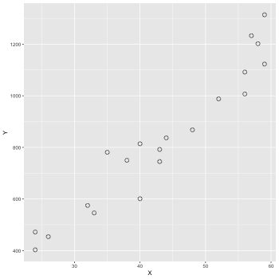

Stan と R でベイズ統計モデリング 第四章
math python r stanTable of Contents
#+File Created:
#+Last Updated:
Stan と R でベイズ統計モデリング (第四章)の学習記録
この本は素晴らしい. めちゃんこ賢い人が書いた本って感じがする.
疑問に思いそうなところをちゃんと先回りしてわかりやすく解説してくれているし,
書き方に統一感があって, 読み進めていくうちに自然に身につくような構成となっている.
この本では RStan を使った解説が行われているが,
これからは cmdstanr/cmdstanpy らしい( Cmdstanr入門とreduce_sum()解説 ) のでこれらを用いて書き直してみる.
基礎となる単回帰の説明がある第四章を見てみる.
自分用メモ.
1 Stan の基本的文法
1.1 ブロック構成
Stan の最も簡単なプログラム例.
データ Y は正規分布する.
求めたいパラメータは平均値 mu. の場合.
1: data { 2: int N; 3: real Y[N]; 4: } 5: 6: parameters { 7: real mu; 8: } 9: 10: model { 11: for(i in 1:N) { 12: Y[N] ~ normal(mu,1) 13: } 14: mu ~ normal(0,100); 15: }
1.2 コーディング規約
- インデント
- データ変数は大文字から, パラメータは小文字から始める.
- ブロックの間は1行あける.
- 変数名は snake_case にする.
- ~ 及び = の前後はスペースあける.
2 Stan の lp__ と target
事後確率は以下のように計算できる.
$$
p(\theta|Y) \propto p(Y|\theta) p(\theta)
$$
対数事後確率は
$$
\log p(\theta|Y) \propto \log p(Y|\theta) + \log p(\theta)
$$
Stan の結果データの中に出てくる lp__ (log posterior) は, 各 MCMC step でパラメータ \(\theta\) に何か具体的な値 \(\theta^{\star}\) を入れたときの \(\log p(\theta^{\star}|Y)\) の値.
$$
lp\_\_ = \log p(\theta^{\star}|Y) \propto \log p(Y|\theta^{\star}) + \log p(\theta^{\star})
$$
データが \(N\) 個あれば以下のようになる. もちろん \(Y_i\) には何らかの具体的な数値が入っている.
$$
lp\_\_ = \log p(\theta^{\star}|Y) \propto \sum_{i=1}^{N} \log p(Y_i|\theta^{\star}) + \log p(\theta^{\star})
$$
Stan の model ブロックでの \(Y \sim dist(\theta)\) という書き方は,
内部的には以下のように計算されている.
1: lp__ = log(p(theta)); # 事前分布(の log) 2: for(i in 1:N) { 3: lp__ += log(p(Y[i]|theta)); # データは独立なので確率を掛け算(log なので足し算になる) 4: }
target は lp__ の別名である.
Stan では, target に \(\log p(Y|\theta)\) を足し込んでいく上のような書き方が出来るようになっている.
特に複雑な尤度計算を行う際にはこっちの書き方をする場合がある.
普通の書き方
1: model { 2: for(i in 1:N) { 3: Y[i] ~ normal(mu,1); 4: } 5: mu ~ normal(0,100); 6: }
を target に足し込む形式で書くと以下のようになる.
normal_ldf(Y[i]|mu, sigma) は \(\log normal(Y[i]|\mu, sigma)\) を表す便利な関数.
(ldf は log probability density function. log 確率密度関数)
1: model { 2: for(i in 1:N) { 3: target += normal_lpdf(Y[i]|mu,1); 4: } 5: target += normal_lpdf(mu|0,100); 6: }
3 単回帰
これが全ての基礎. よくわかんなくなったらここに戻ってくること.
単回帰の例で Stan 及び cmdstanr/cmdstanpy の典型的な使い方を見てみる.
3.1 データの図示
データファイル: data-salary.txt (X 列, Y 列がある. X 列の値から Y の値をよそくしたい！！)
ggplot2 で図を描いてみる.
1: library(ggplot2) 2: d <- read.csv(file='data-salary.txt') 3: p <- ggplot(data=d) + geom_point(mapping=aes(x=X,y=Y),shape=1, size=3) 4: fname <- '04_01_fig.png' 5: ggsave(file=fname, plot=p, dpi=50) # dpi で図の大きさ(解像度)を指定

3.2 単回帰(lm)
lm 関数を使って単回帰を行う.
1: d <- read.csv(file='data-salary.txt') 2: res <- lm(Y ~ X, data=d) 3: summary(res)
Call:
lm(formula = Y ~ X, data = d)
Residuals:
Min 1Q Median 3Q Max
-155.471 -51.523 -6.663 52.822 141.349
Coefficients:
Estimate Std. Error t value Pr(>|t|)
(Intercept) -119.697 68.148 -1.756 0.096 .
X 21.904 1.518 14.428 2.47e-11 ***
---
Signif. codes: 0 ‘***’ 0.001 ‘**’ 0.01 ‘*’ 0.05 ‘.’ 0.1 ‘ ’ 1
Residual standard error: 79.1 on 18 degrees of freedom
Multiple R-squared: 0.9204, Adjusted R-squared: 0.916
F-statistic: 208.2 on 1 and 18 DF, p-value: 2.466e-11
信頼区間
coord_cartesian(xlim=Xの範囲, ylim=Yの範囲)
scale_y_continuous() で Y の補助目盛りの設定など
1: d <- read.csv(file='data-salary.txt') 2: res <- lm(Y ~ X, data=d) 3: 4: X_new <- data.frame(X=23:60) 5: conf_95 <- predict(res, X_new, interval='confidence', level=0.95) 6: conf_50 <- predict(res, X_new, interval='confidence', level=0.50) 7: conf_95 <- data.frame(X_new,conf_95) # 列名 = (X,fit,lwr,upr) 8: conf_50 <- data.frame(X_new,conf_50) 9: 10: library(ggplot2) 11: p <- ggplot() 12: p <- p + geom_ribbon(data=conf_95, mapping=aes(x=X,ymin=lwr,ymax=upr), alpha=1/6) 13: p <- p + geom_ribbon(data=conf_50, mapping=aes(x=X,ymin=lwr,ymax=upr), alpha=3/6) 14: p <- p + geom_line(data=conf_50,aes(x=X,y=fit),size=1) # 線 15: p <- p + geom_point(data=d, aes(x=X, y=Y), shape=1, size=3) # まる 16: p <- p + labs(x='X', y='Y') + coord_cartesian(xlim=c(22, 61), ylim=c(200, 1400)) 17: p <- p + scale_y_continuous(breaks=seq(from=200, to=1400, by=400)) 18: fname <- 'fig4-3-left.png' 19: ggsave(file=fname, plot=p, dpi=50)
予測区間を描く.
confidence –> prediction にする.
1: d <- read.csv(file='data-salary.txt') 2: res <- lm(Y ~ X, data=d) 3: 4: X_new <- data.frame(X=23:60) 5: pred_95 <- predict(res, X_new, interval='prediction', level=0.95) 6: pred_50 <- predict(res, X_new, interval='prediction', level=0.50) 7: pred_95 <- data.frame(X_new,pred_95) # 列名 = (X,fit,lwr,upr) 8: pred_50 <- data.frame(X_new,pred_50) 9: 10: library(ggplot2) 11: p <- ggplot() 12: p <- p + geom_ribbon(data=pred_95, mapping=aes(x=X,ymin=lwr,ymax=upr), alpha=1/6) 13: p <- p + geom_ribbon(data=pred_50, mapping=aes(x=X,ymin=lwr,ymax=upr), alpha=3/6) 14: p <- p + geom_line(data=pred_50,aes(x=X,y=fit),size=1) # 線 15: p <- p + geom_point(data=d, aes(x=X, y=Y), shape=1, size=3) # まる 16: p <- p + labs(x='X', y='Y') + coord_cartesian(xlim=c(22, 61), ylim=c(200, 1400)) 17: p <- p + scale_y_continuous(breaks=seq(from=200, to=1400, by=400)) 18: fname <- 'fig4-3-right.png' 19: ggsave(file=fname, plot=p, dpi=50)
3.3 Stan で実装 (1) cmdstanr
1: data { 2: int N; 3: real X[N]; 4: real Y[N]; 5: } 6: 7: parameters { 8: real a; 9: real b; 10: real<lower=0> sigma; 11: } 12: 13: model { 14: for(i in 1:N) { 15: Y[i] ~ normal(a + b*X[i], sigma); 16: } 17: }
これをキックする R コードを書く.
本にある RStan ではなく comdstanr で書いてみる.
1: library(cmdstanr) 2: d <- read.csv(file='data-salary.txt') 3: data <- list(N=nrow(d), X=d$X, Y=d$Y) 4: model <- cmdstan_model('model4-5.stan') 5: fit <- model$sample(data=data, chains=4, parallel_chains=4, seed=1234) 6: fit$save_output_files(dir="./", basename='model4-5', timestamp=FALSE, random=FALSE)
Running MCMC with 4 parallel chains... Chain 1 Iteration: 1 / 2000 [ 0%] (Warmup) ... Chain 1 Iteration: 1001 / 2000 [ 50%] (Sampling) Chain 1 Iteration: 1100 / 2000 [ 55%] (Sampling) Chain 1 Iteration: 1200 / 2000 [ 60%] (Sampling) Chain 1 Iteration: 1300 / 2000 [ 65%] (Sampling) Chain 1 Iteration: 1400 / 2000 [ 70%] (Sampling) Chain 1 Iteration: 1500 / 2000 [ 75%] (Sampling) Chain 1 Iteration: 1600 / 2000 [ 80%] (Sampling) Chain 1 Iteration: 1700 / 2000 [ 85%] (Sampling) Chain 1 Iteration: 1800 / 2000 [ 90%] (Sampling) Chain 1 Iteration: 1900 / 2000 [ 95%] (Sampling) Chain 1 Iteration: 2000 / 2000 [100%] (Sampling) ..... Chain 4 Iteration: 1700 / 2000 [ 85%] (Sampling) Chain 4 Iteration: 1800 / 2000 [ 90%] (Sampling) Chain 4 Iteration: 1900 / 2000 [ 95%] (Sampling) Chain 4 Iteration: 2000 / 2000 [100%] (Sampling) Chain 1 finished in 0.1 seconds. Chain 2 finished in 0.1 seconds. Chain 3 finished in 0.1 seconds. Chain 4 finished in 0.1 seconds. All 4 chains finished successfully. Mean chain execution time: 0.1 seconds. Total execution time: 0.3 seconds.
csv ファイルからの読み込み
結果を見てみる.
Read CmdStan CSV files into R — read_cmdstan_csv • cmdstanr
1: library(cmdstanr) 2: files <- c('model4-5-1.csv', 3: 'model4-5-2.csv', 4: 'model4-5-3.csv', 5: 'model4-5-4.csv') 6: fit <- as_cmdstan_fit(files) 7: fit$summary()
# A tibble: 4 × 10 variable mean median sd mad q5 q95 rhat ess_bulk ess_tail <chr> <dbl> <dbl> <dbl> <dbl> <dbl> <dbl> <dbl> <dbl> <dbl> 1 lp__ -93.6 -93.3 1.26 1.04 -96.1 -92.2 1.01 1304. 1691. 2 a -117. -119. 71.3 68.7 -236. 2.08 1.00 1377. 1556. 3 b 21.9 21.9 1.60 1.54 19.2 24.5 1.00 1349. 1501. 4 sigma 84.5 82.4 15.2 14.3 63.8 112. 1.01 1615. 1361.
lm では a = -119.7, b = 21.9 と推定されていたのでほぼ同じ結果が出たと言って良いだろう.
RStan の形式で見るには以下のようにする.
1: library(rstan) 2: files <-c('model4-5-1.csv', 3: 'model4-5-2.csv', 4: 'model4-5-3.csv', 5: 'model4-5-4.csv') 6: rstanfit <- rstan::read_stan_csv(files) # rstan の fit object が作成できた. これを使う. 7: options(width=180) 8: summary(rstanfit)$summary
mean se_mean sd 2.5% 25% 50% 75% 97.5% n_eff Rhat
a -117.45496 1.93495619 71.307379 -257.65965 -164.64975 -119.17350 -71.97750 23.16816 1358.084 1.000974
b 21.85965 0.04379069 1.597700 18.67989 20.82737 21.88625 22.90630 24.97104 1331.149 1.001300
sigma 84.50608 0.40945078 15.213551 61.08729 73.71800 82.41410 93.17735 120.02752 1380.568 1.005035
lp__ -93.60737 0.03683109 1.256416 -96.86346 -94.18972 -93.27450 -92.69150 -92.13598 1163.691 1.007309
3.4 Stan 結果解析
MCMC データの extract は fit$draws
1: library(cmdstanr) 2: files <- c('model4-5-1.csv', 3: 'model4-5-2.csv', 4: 'model4-5-3.csv', 5: 'model4-5-4.csv') 6: fit <- as_cmdstan_fit(files) 7: ms <- fit$draws(format='matrix') # chain を一つにまとめる 8: dim(ms) 9: head(ms)
[1] 4000 4
# A draws_matrix: 6 iterations, 1 chains, and 4 variables
variable
draw lp__ a b sigma
1 -93 -94.6 21 72
2 -93 -79.0 21 87
3 -94 -34.5 21 95
4 -93 -50.5 20 96
5 -94 6.4 19 90
6 -92 -133.7 22 81
パラメータの分布を図示
1: library(cmdstanr) 2: library(ggplot2) 3: files <- c('model4-5-1.csv', 4: 'model4-5-2.csv', 5: 'model4-5-3.csv', 6: 'model4-5-4.csv') 7: fit <- as_cmdstan_fit(files) 8: p <- bayesplot::mcmc_dens(fit$draws(c('a','b','sigma'))) 9: fname <- 'model4-5_param_dens.png' 10: ggsave(file=fname, plot=p, dpi=70)
ヒストグラムで描くと
1: library(cmdstanr) 2: library(ggplot2) 3: files <- c('model4-5-1.csv', 4: 'model4-5-2.csv', 5: 'model4-5-3.csv', 6: 'model4-5-4.csv') 7: fit <- as_cmdstan_fit(files) 8: p <- bayesplot::mcmc_hist(fit$draws(c('a','b','sigma'))) 9: fname <- 'model4-5_param_hist.png' 10: ggsave(file=fname, plot=p, dpi=70)
trace plot
1: library(cmdstanr) 2: library(ggplot2) 3: files <- c('model4-5-1.csv', 4: 'model4-5-2.csv', 5: 'model4-5-3.csv', 6: 'model4-5-4.csv') 7: fit <- as_cmdstan_fit(files) 8: p <- bayesplot::mcmc_trace(fit$draws(c('a','b','sigma'))) 9: fname <- 'model4-5_param_trace.png' 10: ggsave(file=fname, plot=p, dpi=70)
mcmc_dens_overlay
chain ごとに描く.
1: library(cmdstanr) 2: library(ggplot2) 3: files <- c('model4-5-1.csv', 4: 'model4-5-2.csv', 5: 'model4-5-3.csv', 6: 'model4-5-4.csv') 7: fit <- as_cmdstan_fit(files) 8: p <- bayesplot::mcmc_dens_overlay(fit$draws(c('a','b','sigma'))) 9: fname <- 'model4-5_param_dens_overlay.png' 10: ggsave(file=fname, plot=p, dpi=70)
mcmc_pairs
パラメータ間の関係をみる.
1: library(cmdstanr) 2: library(ggplot2) 3: files <- c('model4-5-1.csv', 4: 'model4-5-2.csv', 5: 'model4-5-3.csv', 6: 'model4-5-4.csv') 7: fit <- as_cmdstan_fit(files) 8: p <- bayesplot::mcmc_pairs(fit$draws(c('a','b'))) 9: fname <- 'model4-5_param_pairs.png' 10: ggsave(file=fname, plot=p, dpi=70)
1: library(cmdstanr) 2: files <- c('model4-5-1.csv', 3: 'model4-5-2.csv', 4: 'model4-5-3.csv', 5: 'model4-5-4.csv') 6: fit <- as_cmdstan_fit(files) 7: ms <- fit$draws(format='df') 8: head(ms) 9: head(ms$a) 10: length(ms$a) 11: quantile(ms$b, probs=c(0.025,0.975))
# A draws_df: 6 iterations, 1 chains, and 4 variables
lp__ a b sigma
1 -93 -94.6 21 72
2 -93 -79.0 21 87
3 -94 -34.5 21 95
4 -93 -50.5 20 96
5 -94 6.4 19 90
6 -92 -133.7 22 81
# ... hidden reserved variables {'.chain', '.iteration', '.draw'}
[1] -94.58260 -79.03710 -34.45430 -50.53660 6.44861 -133.72600
[1] 4000
2.5% 97.5%
18.67989 24.97104
mcmc_pairs に似た図を ggplot を用いて描いてみる
1: library(ggplot2) 2: library(cmdstanr) 3: files <- c('model4-5-1.csv', 4: 'model4-5-2.csv', 5: 'model4-5-3.csv', 6: 'model4-5-4.csv') 7: fit <- as_cmdstan_fit(files) 8: df_mcmc <- fit$draws(format='df') 9: # 散布図 10: p_xy <- ggplot(df_mcmc,aes(x=a,y=b)) + 11: geom_point(alpha=1/4,size=2,shape=1) + 12: scale_x_continuous(breaks=seq(-400,200,200), limits=c(-420,210)) + 13: scale_y_continuous(breaks=seq(15,25,5),limits=c(14.5,29)) 14: 15: # a の分布図 16: p_x <- ggplot(df_mcmc,aes(x=a)) + theme_bw(base_size=18) + theme(legend.position='none') + 17: geom_histogram(aes(y=..density..),color='black',fill='white') + 18: geom_density(alpha=0.3,fill='gray20') + 19: scale_x_continuous(breaks=seq(-400,200,200),limits=c(-420,210))+ 20: labs(x='',y='') 21: # b の分布図 22: p_y <- ggplot(df_mcmc, aes(x=b)) + theme_bw(base_size=18) + theme(legend.position='none') + 23: coord_flip() + 24: geom_histogram(aes(y=..density..), colour='black', fill='white') + 25: geom_density(alpha=0.3, fill='gray20') + 26: scale_x_continuous(breaks=seq(15, 25, 5), limits=c(14.5, 29)) + 27: labs(x='', y='') 28: 29: p_emp <- ggplot(data.frame(0,0)) + theme(rect=element_rect(fill='white'), panel.border=element_blank()) 30: 31: g_xy <- ggplotGrob(p_xy) 32: g_x <- ggplotGrob(p_x) 33: g_y <- ggplotGrob(p_y) 34: g_emp <- ggplotGrob(p_emp) 35: 36: g1 <- cbind(g_x, g_emp, size='first') 37: g2 <- cbind(g_xy, g_y, size='first') 38: g <- rbind(g1, g2, size='first') 39: fname <- 'fig4-7.png' 40: ggsave(file=fname, plot=g, dpi=70)
3.5 ベイズ信頼区間
ベイズ信頼区間(R の中での計算の例)
1: library(ggplot2) 2: library(cmdstanr) 3: files <- c('model4-5-1.csv', 4: 'model4-5-2.csv', 5: 'model4-5-3.csv', 6: 'model4-5-4.csv') 7: fit <- as_cmdstan_fit(files) 8: ms <- fit$draws(format='df') 9: 10: X_new <- 23:60 11: N_X <- length(X_new) 12: N_mcmc <- length(ms$lp__) 13: 14: set.seed(1234) 15: y_base_mcmc <- as.data.frame(matrix(nrow=N_mcmc,ncol=N_X)) 16: y_mcmc <- as.data.frame(matrix(nrow=N_mcmc,ncol=N_X)) 17: 18: # i 列目のデータを作る 19: for (i in 1:N_X) { 20: y_base_mcmc[,i] <- ms$a + ms$b * X_new[i] 21: y_mcmc[,i] <- rnorm(n=N_mcmc,mean=y_base_mcmc[,i],sd=ms$sigma) 22: } 23: conf <- data.frame(X=X_new,t(apply(y_base_mcmc,2,quantile,probs=c(0.025,0.25,0.50,0.75,0.975)))) 24: colnames(conf) <- c('X','p025','p250','p500','p750','p975') 25: 26: d <- read.csv(file='data-salary.txt') 27: p <- ggplot() 28: p <- p + geom_ribbon(data=conf,aes(x=X,ymin=p025,ymax=p975),alpha=1/6) 29: p <- p + geom_ribbon(data=conf,aes(x=X,ymin=p250,ymax=p750),alpha=2/6) 30: p <- p + geom_line( data=conf,aes(x=X,y=p500),size=0.2) # 線 31: p <- p + geom_point( data=d, aes(x=X,y=Y), shape=1, size=3) # まる 32: p <- p + labs(x='X', y='Y') + coord_cartesian(xlim=c(22, 61), ylim=c(200, 1400)) 33: p <- p + scale_y_continuous(breaks=seq(from=200, to=1400, by=400)) 34: 35: fname <- 'fig4-8-left.png' 36: ggsave(file=fname, plot=p, dpi=70)
3.6 ベイズ予測区間
ベイズ予測区間(R の中での計算の例)
1: library(ggplot2) 2: library(cmdstanr) 3: files <- c('model4-5-1.csv', 4: 'model4-5-2.csv', 5: 'model4-5-3.csv', 6: 'model4-5-4.csv') 7: fit <- as_cmdstan_fit(files) 8: ms <- fit$draws(format='df') 9: 10: X_new <- 23:60 11: N_X <- length(X_new) 12: N_mcmc <- length(ms$lp__) 13: 14: set.seed(1234) 15: y_base_mcmc <- as.data.frame(matrix(nrow=N_mcmc,ncol=N_X)) 16: y_mcmc <- as.data.frame(matrix(nrow=N_mcmc,ncol=N_X)) 17: 18: # i 列目のデータを作る 19: for (i in 1:N_X) { 20: y_base_mcmc[,i] <- ms$a + ms$b * X_new[i] 21: y_mcmc[,i] <- rnorm(n=N_mcmc,mean=y_base_mcmc[,i],sd=ms$sigma) 22: } 23: 24: # y_base_mcmc --> y_mcmc に変更しただけ 25: conf <- data.frame(X=X_new,t(apply(y_mcmc,2,quantile,probs=c(0.025,0.25,0.50,0.75,0.975)))) 26: colnames(conf) <- c('X','p025','p250','p500','p750','p975') 27: 28: d <- read.csv(file='data-salary.txt') 29: p <- ggplot() 30: p <- p + geom_ribbon(data=conf,aes(x=X,ymin=p025,ymax=p975),alpha=1/6) 31: p <- p + geom_ribbon(data=conf,aes(x=X,ymin=p250,ymax=p750),alpha=2/6) 32: p <- p + geom_line( data=conf,aes(x=X,y=p500),size=0.2) # 線 33: p <- p + geom_point( data=d, aes(x=X,y=Y), shape=1, size=3) # まる 34: p <- p + labs(x='X', y='Y') + coord_cartesian(xlim=c(22, 61), ylim=c(200, 1400)) 35: p <- p + scale_y_continuous(breaks=seq(from=200, to=1400, by=400)) 36: 37: fname <- 'fig4-8-right.png' 38: ggsave(file=fname, plot=p, dpi=70)
3.7 transformed parametes 及び generated quantities ブロック
処理は出来るだけ Stan 側でやらせたい.
R では出てきたデータの解析と図示に使う.
ベイズ信頼区間, 予測区間など, サンプルから派生する乱数計算部分を Stan に任せる.
(model4-4.stan)
data { int N; real X[N]; real Y[N]; // 追加部分 int N_new; real X_new[N_new]; } parameters { real a; real b; real<lower=0> sigma; } // transformed parameters では, // data, parameter を組み合わせて, // 新しいサンプリングパラメータを作成出来る. transformed parameters { real y_base[N]; for (i in 1:N) { y_base[i] = a + b*X[i]; } } model { for (i in 1:N) { Y[i] ~ normal(y_base[i],sigma); } } // generated quantities では, // data, parameter, transformed parameter を使って, // 新しいサンプリングパラメータを作成出来る. // 分布に従う乱数作成の際には, ~ ではなく // y = 分布名_rng(parameter) という形で = で代入する点に注意する. generated quantities { real y_base_new[N_new]; real y_new[N_new]; for (i in 1:N_new) { y_base_new[i] = a + b*X_new[i]; y_new[i] = normal_rng(y_base_new[i],sigma); } }
cmdstanr を用いてキックする R code を作成する.
library(cmdstanr) d <- read.csv(file="data-salary.txt") X_new <- 23:60 data <- list(N=nrow(d),X=d$X,Y=d$Y,N_new=length(X_new),X_new=X_new) model <- cmdstan_model('model4-4.stan') fit <- model$sample(data=data, chains=4, parallel_chains=4, seed=1234) fit$save_output_files(dir="./", basename='model4-4', timestamp=FALSE, random=FALSE)
Running MCMC with 4 parallel chains... Chain 1 Iteration: 1 / 2000 [ 0%] (Warmup) Chain 1 Iteration: 100 / 2000 [ 5%] (Warmup) Chain 1 Iteration: 200 / 2000 [ 10%] (Warmup) .... Chain 4 Iteration: 1400 / 2000 [ 70%] (Sampling) Chain 4 Iteration: 1500 / 2000 [ 75%] (Sampling) Chain 4 Iteration: 1600 / 2000 [ 80%] (Sampling) Chain 4 Iteration: 1700 / 2000 [ 85%] (Sampling) Chain 4 Iteration: 1800 / 2000 [ 90%] (Sampling) Chain 4 Iteration: 1900 / 2000 [ 95%] (Sampling) Chain 4 Iteration: 2000 / 2000 [100%] (Sampling) Chain 1 finished in 0.1 seconds. Chain 2 finished in 0.1 seconds. Chain 3 finished in 0.1 seconds. Chain 4 finished in 0.1 seconds. All 4 chains finished successfully. Mean chain execution time: 0.1 seconds. Total execution time: 0.3 seconds.
ちょっとテスト. df の中身を確認.
1: library(cmdstanr) 2: files <- c('model4-4-1.csv', 3: 'model4-4-2.csv', 4: 'model4-4-3.csv', 5: 'model4-4-4.csv') 6: fit <- as_cmdstan_fit(files) 7: df <- fit$summary(variables=c('y_base_new'),'mean','sd', 'quantile', 'rhat','ess_bulk','ess_tail') 8: head(df)
# A tibble: 6 × 11 variable mean sd `0%` `25%` `50%` `75%` `100%` rhat ess_bulk ess_tail <chr> <dbl> <dbl> <dbl> <dbl> <dbl> <dbl> <dbl> <dbl> <dbl> <dbl> 1 y_base_new… 386. 40.9 217. 360. 386. 412. 575. 1.00 1366. 1353. 2 y_base_new… 408. 39.3 246. 383. 407. 432. 588. 1.00 1382. 1303. 3 y_base_new… 429. 37.8 274. 405. 429. 453. 602. 1.00 1401. 1419. 4 y_base_new… 451. 36.3 303. 428. 451. 474. 616. 1.00 1421. 1414. 5 y_base_new… 473. 34.9 331. 451. 473. 495. 630. 1.00 1444. 1395. 6 y_base_new… 495. 33.4 359. 474. 495. 516. 644. 1.00 1473. 1438.
1: library(cmdstanr) 2: q95 <- function(x) quantile(x, probs=c(0.025, 0.25, 0.5, 0.75, 0.975)) 3: files <- c('model4-4-1.csv', 4: 'model4-4-2.csv', 5: 'model4-4-3.csv', 6: 'model4-4-4.csv') 7: fit <- as_cmdstan_fit(files) 8: df <- fit$summary(variables=c('y_base_new'),'mean','sd', q95) 9: X_new <- 23:60 10: df$X_new <- X_new 11: print(df) 12: print(class(df$"50%")) # 書き出すときはこれでもOKだが. 13: print(df$`50%`) # ggplot の aes で使うときは `50%` (back quote?) を使う 14: print(X_new)
# A tibble: 38 × 9 variable mean sd `2.5%` `25%` `50%` `75%` `97.5%` X_new <chr> <dbl> <dbl> <dbl> <dbl> <dbl> <dbl> <dbl> <int> 1 y_base_new[1] 386. 40.9 305. 360. 386. 412. 466. 23 2 y_base_new[2] 408. 39.3 329. 383. 407. 432. 485. 24 3 y_base_new[3] 429. 37.8 354. 405. 429. 453. 504. 25 4 y_base_new[4] 451. 36.3 379. 428. 451. 474. 522. 26 5 y_base_new[5] 473. 34.9 403. 451. 473. 495. 541. 27 6 y_base_new[6] 495. 33.4 428. 474. 495. 516. 561. 28 7 y_base_new[7] 517. 32.0 453. 497. 516. 537. 580. 29 8 y_base_new[8] 538. 30.7 477. 519. 538. 558. 599. 30 9 y_base_new[9] 560. 29.3 502. 542. 560. 579. 619. 31 10 y_base_new[10] 582. 28.0 526. 564. 582. 600. 638. 32 # … with 28 more rows [1] "numeric" [1] 385.5130 407.4335 429.0850 451.3160 472.9815 494.5715 516.3015 [8] 537.9880 559.8315 581.7540 603.2995 625.3255 647.2970 669.3170 [15] 691.0870 713.0220 734.9595 756.7530 778.5770 800.3400 822.2360 [22] 844.0335 865.6885 887.4945 909.2655 931.0180 953.1985 975.1065 [29] 996.8525 1018.6000 1040.5050 1062.1500 1084.0350 1105.8150 1127.7300 [36] 1149.6500 1171.4100 1193.2600 [1] 23 24 25 26 27 28 29 30 31 32 33 34 35 36 37 38 39 40 41 42 43 44 45 46 47 [26] 48 49 50 51 52 53 54 55 56 57 58 59 60
ベイズ信頼区間の図を描いてみる.
1: library(cmdstanr) 2: library(ggplot2) 3: 4: # 95% 信頼区間 5: q95 <- function(x) quantile(x, probs=c(0.025, 0.25, 0.5, 0.75, 0.975)) 6: files <- c('model4-4-1.csv', 7: 'model4-4-2.csv', 8: 'model4-4-3.csv', 9: 'model4-4-4.csv') 10: fit <- as_cmdstan_fit(files) 11: df <- fit$summary(variables=c('y_base_new'),'mean','sd', q95) 12: X_new <- 23:60 13: df$X_new <- X_new 14: 15: # 元データ 16: d <- read.csv(file="data-salary.txt") 17: 18: # 図 19: p <- ggplot() + geom_point(data=d, mapping=aes(x=X,y=Y), shape=1, size=3) 20: p <- p + geom_line(data=df,mapping=aes(x=X_new,y=`50%`)) 21: p <- p + geom_ribbon(data=df, mapping=aes(x=X_new, ymax=`97.5%`,ymin=`2.5%`),alpha=1/6) 22: p <- p + geom_ribbon(data=df, mapping=aes(x=X_new, ymax=`75%` ,ymin=`25%` ),alpha=2/6) 23: 24: fname <- 'fig4-8-left_cmdstan.png' 25: ggsave(file=fname, plot=p, dpi=70)
ベイズ予測区間
1: library(cmdstanr) 2: library(ggplot2) 3: 4: # 95% 信頼区間 5: q95 <- function(x) quantile(x, probs=c(0.025, 0.25, 0.5, 0.75, 0.975)) 6: files <- c('model4-4-1.csv', 7: 'model4-4-2.csv', 8: 'model4-4-3.csv', 9: 'model4-4-4.csv') 10: fit <- as_cmdstan_fit(files) 11: df <- fit$summary(variables=c('y_new'),'mean','sd', q95) 12: X_new <- 23:60 13: df$X_new <- X_new 14: 15: # 元データ 16: d <- read.csv(file="data-salary.txt") 17: 18: # 図 19: p <- ggplot() + geom_point(data=d, mapping=aes(x=X,y=Y), shape=1, size=3) 20: p <- p + geom_line(data=df,mapping=aes(x=X_new,y=`50%`)) 21: p <- p + geom_ribbon(data=df, mapping=aes(x=X_new, ymax=`97.5%`,ymin=`2.5%`),alpha=1/6) 22: p <- p + geom_ribbon(data=df, mapping=aes(x=X_new, ymax=`75%` ,ymin=`25%` ),alpha=2/6) 23: 24: fname <- 'fig4-8-right_cmdstan.png' 25: ggsave(file=fname, plot=p, dpi=70)
3.8 Stan で実装(2) cmdstanpy
Stan code は generated quantities がある model4-4.stan を用いよう.
キックする Python script (cmdstanpy) を書く.
1: import pandas as pd 2: from cmdstanpy import CmdStanModel 3: 4: d = pd.read_csv("data-salary.txt",header=0) 5: N = len(d) 6: X = d.iloc[:,0] 7: Y = d.iloc[:,1] 8: X_new = range(23,61) 9: N_new = len(X_new) 10: data = {'N': N, 'X': X, 'Y': Y, 'N_new': N_new, 'X_new': X_new} 11: model = CmdStanModel(stan_file='model4-4.stan',model_name='model4-4') 12: fit = model.sample(data=data, chains=4, parallel_chains=4, seed=1234) 13: # ファイル名を指定できない... timestamp とか要らないんだが. 14: fit.save_csvfiles(dir='./') 15: fpd = fit.summary() 16: print(fpd.head(50))
Mean MCSE StdDev 5% ... 95% N_Eff N_Eff/s R_hat
name ...
lp__ -94.0 0.049 1.5 -96.0 ... -92.0 910.0 3300.0 1.0
a -120.0 2.300 79.0 -240.0 ... 10.0 1200.0 4400.0 1.0
b 22.0 0.050 1.7 19.0 ... 25.0 1200.0 4400.0 1.0
sigma 85.0 0.460 16.0 64.0 ... 110.0 1300.0 4600.0 1.0
y_base[1] 408.0 1.100 39.0 345.0 ... 471.0 1337.0 4863.0 1.0
y_base[2] 408.0 1.100 39.0 345.0 ... 471.0 1337.0 4863.0 1.0
y_base[3] 451.0 0.980 36.0 394.0 ... 510.0 1376.0 5004.0 1.0
y_base[4] 582.0 0.700 28.0 537.0 ... 627.0 1598.0 5810.0 1.0
y_base[5] 604.0 0.660 27.0 561.0 ... 647.0 1667.0 6061.0 1.0
y_base[6] 648.0 0.570 25.0 608.0 ... 687.0 1859.0 6759.0 1.0
y_base[7] 713.0 0.440 22.0 677.0 ... 748.0 2443.0 8884.0 1.0
y_base[8] 757.0 0.360 20.0 723.0 ... 789.0 3216.0 11694.0 1.0
y_base[9] 757.0 0.360 20.0 723.0 ... 789.0 3216.0 11694.0 1.0
y_base[10] 822.0 0.300 19.0 791.0 ... 853.0 4285.0 15580.0 1.0
y_base[11] 822.0 0.300 19.0 791.0 ... 853.0 4285.0 15580.0 1.0
y_base[12] 844.0 0.290 19.0 812.0 ... 875.0 4461.0 16224.0 1.0
y_base[13] 931.0 0.320 21.0 897.0 ... 965.0 4192.0 15242.0 1.0
y_base[14] 1019.0 0.460 24.0 979.0 ... 1058.0 2781.0 10114.0 1.0
y_base[15] 1106.0 0.630 29.0 1058.0 ... 1154.0 2127.0 7734.0 1.0
y_base[16] 1106.0 0.630 29.0 1058.0 ... 1154.0 2127.0 7734.0 1.0
y_base[17] 1128.0 0.680 30.0 1078.0 ... 1178.0 2026.0 7367.0 1.0
y_base[18] 1150.0 0.720 32.0 1097.0 ... 1202.0 1941.0 7058.0 1.0
y_base[19] 1171.0 0.770 33.0 1117.0 ... 1226.0 1869.0 6796.0 1.0
y_base[20] 1171.0 0.770 33.0 1117.0 ... 1226.0 1869.0 6796.0 1.0
y_base_new[1] 386.0 1.100 41.0 320.0 ... 452.0 1322.0 4807.0 1.0
y_base_new[2] 408.0 1.100 39.0 345.0 ... 471.0 1337.0 4863.0 1.0
y_base_new[3] 429.0 1.000 38.0 370.0 ... 491.0 1355.0 4929.0 1.0
y_base_new[4] 451.0 0.980 36.0 394.0 ... 510.0 1376.0 5004.0 1.0
y_base_new[5] 473.0 0.930 35.0 418.0 ... 529.0 1400.0 5092.0 1.0
y_base_new[6] 495.0 0.890 33.0 442.0 ... 548.0 1427.0 5187.0 1.0
y_base_new[7] 517.0 0.840 32.0 466.0 ... 568.0 1458.0 5302.0 1.0
y_base_new[8] 538.0 0.790 31.0 489.0 ... 588.0 1496.0 5440.0 1.0
y_base_new[9] 560.0 0.750 29.0 514.0 ... 607.0 1542.0 5607.0 1.0
y_base_new[10] 582.0 0.700 28.0 537.0 ... 627.0 1598.0 5810.0 1.0
y_base_new[11] 604.0 0.660 27.0 561.0 ... 647.0 1667.0 6061.0 1.0
y_base_new[12] 626.0 0.610 26.0 585.0 ... 667.0 1752.0 6371.0 1.0
y_base_new[13] 648.0 0.570 25.0 608.0 ... 687.0 1859.0 6759.0 1.0
y_base_new[14] 669.0 0.530 23.0 631.0 ... 708.0 1996.0 7257.0 1.0
y_base_new[15] 691.0 0.480 23.0 654.0 ... 728.0 2191.0 7966.0 1.0
y_base_new[16] 713.0 0.440 22.0 677.0 ... 748.0 2443.0 8884.0 1.0
y_base_new[17] 735.0 0.400 21.0 700.0 ... 769.0 2771.0 10077.0 1.0
y_base_new[18] 757.0 0.360 20.0 723.0 ... 789.0 3216.0 11694.0 1.0
y_base_new[19] 779.0 0.330 20.0 746.0 ... 811.0 3615.0 13145.0 1.0
y_base_new[20] 800.0 0.310 20.0 768.0 ... 832.0 4045.0 14708.0 1.0
y_base_new[21] 822.0 0.300 19.0 791.0 ... 853.0 4285.0 15580.0 1.0
y_base_new[22] 844.0 0.290 19.0 812.0 ... 875.0 4461.0 16224.0 1.0
y_base_new[23] 866.0 0.290 20.0 834.0 ... 897.0 4526.0 16458.0 1.0
y_base_new[24] 888.0 0.300 20.0 855.0 ... 919.0 4470.0 16255.0 1.0
y_base_new[25] 909.0 0.310 20.0 876.0 ... 942.0 4314.0 15689.0 1.0
y_base_new[26] 931.0 0.320 21.0 897.0 ... 965.0 4192.0 15242.0 1.0
[50 rows x 9 columns]
csv ファイルからロードできる.
What is the proper way to save a cmdstanpy model after a fit has been complete? - General - The Stan Forums
API Reference — CmdStanPy 1.0.0rc1 documentation
API Reference — CmdStanPy 1.0.1 documentation
cmdstanpy – Python interface to CmdStan — CmdStanPy 1.0.1 documentation
1: import cmdstanpy 2: # 何か面倒 3: files=['model4-4-20220331192118_1.csv', 4: 'model4-4-20220331192118_2.csv', 5: 'model4-4-20220331192118_3.csv', 6: 'model4-4-20220331192118_4.csv'] 7: fit = cmdstanpy.from_csv(path=files, method='sample') 8: df = fit.summary(percentiles=(2.5, 50, 97.5)) 9: print(type(df)) # pandas dataframe として保存されている様子. 10: print(df.head(5))
<class 'pandas.core.frame.DataFrame'>
Mean MCSE StdDev 2.5% 50% 97.5% N_Eff N_Eff/s R_hat
name
lp__ -94.0 0.049 1.5 -98.0 -93.0 -92.0 910.0 3100.0 1.0
a -120.0 2.300 79.0 -290.0 -120.0 32.0 1200.0 4100.0 1.0
b 22.0 0.050 1.7 18.0 22.0 25.0 1200.0 4100.0 1.0
sigma 85.0 0.460 16.0 60.0 83.0 120.0 1300.0 4200.0 1.0
y_base[1] 408.0 1.100 39.0 323.0 407.0 482.0 1337.0 4503.0 1.0
cmdstanpy の計算結果 csv ファイルを R (cmdstanr) で読み込むことも可能
1: library(cmdstanr) 2: files <-c('model4-4-20220331192118_1.csv', 3: 'model4-4-20220331192118_2.csv', 4: 'model4-4-20220331192118_3.csv', 5: 'model4-4-20220331192118_4.csv') 6: fit <- as_cmdstan_fit(files) 7: fit$summary()
# A tibble: 100 × 10 variable mean median sd mad q5 q95 rhat ess_bulk ess_tail <chr> <dbl> <dbl> <dbl> <dbl> <dbl> <dbl> <dbl> <dbl> <dbl> 1 lp__ -93.7 -93.3 1.46 1.12 -96.5 -92.2 1.00 1133. 1216. 2 a -116. -117. 78.6 74.3 -242. 9.99 1.00 1248. 1240. 3 b 21.8 21.8 1.75 1.62 19.0 24.6 1.00 1253. 1232. 4 sigma 85.3 82.9 16.4 14.2 63.7 114. 1.00 1523. 1343. 5 y_base[1] 408. 407. 39.3 37.1 346. 471. 1.00 1382. 1303. 6 y_base[2] 408. 407. 39.3 37.1 346. 471. 1.00 1382. 1303. 7 y_base[3] 451. 451. 36.3 34.0 394. 510. 1.00 1421. 1414. 8 y_base[4] 582. 582. 28.0 26.6 537. 627. 1.00 1662. 1715. 9 y_base[5] 604. 603. 26.8 25.5 561. 647. 1.00 1736. 1745. 10 y_base[6] 648. 647. 24.5 23.1 608. 687. 1.00 1939. 1927. # … with 90 more rows
パラメータの分布(密度グラフ)
Matplotlib 密度プロット | Delft スタック
from scipy.stats import kde
density = kde.gaussian_kde(データ)
x = np.linspace(x最小, x最大, 分割数)
y = density(x) # 密度値の推定
ax.plot(x,y)
1: import numpy as np 2: import cmdstanpy 3: import matplotlib.pyplot as plt 4: from scipy.stats import kde 5: files=['model4-4-20220331192118_1.csv', 6: 'model4-4-20220331192118_2.csv', 7: 'model4-4-20220331192118_3.csv', 8: 'model4-4-20220331192118_4.csv'] 9: fit = cmdstanpy.from_csv(path=files, method='sample') 10: 11: la = fit.stan_variables() # { a:[...], b:[...], y_base:[[....],[....],....] } 12: adraw = la['a'] 13: bdraw = la['b'] 14: sdraw = la['sigma'] 15: 16: adens = kde.gaussian_kde(adraw) 17: x = np.linspace(-350,150,100) 18: y = adens(x) 19: 20: bdens = kde.gaussian_kde(bdraw) 21: bx = np.linspace(15,30,100) 22: by = bdens(bx) 23: 24: sdens = kde.gaussian_kde(sdraw) 25: sx = np.linspace(50,170,100) 26: sy = sdens(sx) 27: 28: fig = plt.figure(dpi=100, figsize=(7,3)) 29: ax = fig.add_subplot(1,3,1) 30: ax.set_title('a') 31: ax.plot(x,y) 32: ax2 = fig.add_subplot(1,3,2) 33: ax2.set_title('b') 34: ax2.plot(bx,by) 35: ax3 = fig.add_subplot(1,3,3) 36: ax3.set_title('sigma') 37: ax3.plot(sx,sy) 38: 39: # plt.rcParams['font.size'] = 5 40: plt.tight_layout() 41: 42: fname = 'model4-5_param_dens_py.png' 43: fig.show() 44: fig.savefig(fname)
matplotlib でヒストグラムを描く – Python でデータサイエンス
ヒストグラムのパラメータ
plt.hist(x, bins=16) # 棒の数を 16 に
plt.hist(x, range(50,100)) # 50 - 100 まで
plt.hist(x, normed=True) # 正規化
plt.hist(x, rwidth=0.8) # 棒の幅
plt.hist(x, color="red") # 棒の色
パラメータの分布(ヒストグラム)
1: import numpy as np 2: import cmdstanpy 3: import matplotlib.pyplot as plt 4: from scipy.stats import kde 5: files=['model4-4-20220331192118_1.csv', 6: 'model4-4-20220331192118_2.csv', 7: 'model4-4-20220331192118_3.csv', 8: 'model4-4-20220331192118_4.csv'] 9: fit = cmdstanpy.from_csv(path=files, method='sample') 10: 11: la = fit.stan_variables() # { a:[...], b:[...], y_base:[[....],[....],....] } 12: adraw = la['a'] 13: bdraw = la['b'] 14: sdraw = la['sigma'] 15: 16: fig = plt.figure(dpi=100, figsize=(7,3)) 17: ax = fig.add_subplot(1,3,1) 18: ax.set_title('a') 19: ax.hist(adraw) 20: ax2 = fig.add_subplot(1,3,2) 21: ax2.set_title('b') 22: ax2.hist(bdraw) 23: ax3 = fig.add_subplot(1,3,3) 24: ax3.set_title('sigma') 25: ax3.hist(sdraw) 26: 27: # plt.rcParams['font.size'] = 5 28: plt.tight_layout() 29: 30: fname = 'model4-5_param_hist_py.png' 31: fig.show() 32: fig.savefig(fname)
trace plot
1: # テストプログラム 2: import numpy as np 3: import cmdstanpy 4: import matplotlib.pyplot as plt 5: from scipy.stats import kde 6: files=['model4-4-20220331192118_1.csv', 7: 'model4-4-20220331192118_2.csv', 8: 'model4-4-20220331192118_3.csv', 9: 'model4-4-20220331192118_4.csv'] 10: fit = cmdstanpy.from_csv(path=files, method='sample') 11: 12: la = fit.stan_variables() # { a:[...], b:[...], y_base:[[....],[....],....] } 13: adraw = la['a'] 14: xmax = len(adraw) 15: print(xmax) 16: rng = range(0, xmax) 17: print(len(rng))
4000 4000
1: import numpy as np 2: import cmdstanpy 3: import matplotlib.pyplot as plt 4: from scipy.stats import kde 5: files=['model4-4-20220331192118_1.csv', 6: 'model4-4-20220331192118_2.csv', 7: 'model4-4-20220331192118_3.csv', 8: 'model4-4-20220331192118_4.csv'] 9: fit = cmdstanpy.from_csv(path=files, method='sample') 10: 11: la = fit.stan_variables() # { a:[...], b:[...], y_base:[[....],[....],....] } 12: adraw = la['a'] 13: bdraw = la['b'] 14: sdraw = la['sigma'] 15: x = range(0, len(adraw)) 16: 17: fig = plt.figure(dpi=100, figsize=(7,3)) 18: ax = fig.add_subplot(1,3,1) 19: ax.set_title('a') 20: ax.plot(x,adraw) 21: ax2 = fig.add_subplot(1,3,2) 22: ax2.set_title('b') 23: ax2.plot(x,bdraw) 24: ax3 = fig.add_subplot(1,3,3) 25: ax3.set_title('sigma') 26: ax3.plot(x,sdraw) 27: 28: # plt.rcParams['font.size'] = 5 29: plt.tight_layout() 30: 31: fname = 'model4-5_param_trace_py.png' 32: fig.show() 33: fig.savefig(fname)
ベイズ信頼区間
1: # テストプログラム 2: import numpy as np 3: import cmdstanpy 4: import matplotlib.pyplot as plt 5: import pandas as pd 6: d = pd.read_csv("data-salary.txt",header=0) 7: print(len(d['X'])) 8: files=['model4-4-20220331192118_1.csv', 9: 'model4-4-20220331192118_2.csv', 10: 'model4-4-20220331192118_3.csv', 11: 'model4-4-20220331192118_4.csv'] 12: fit = cmdstanpy.from_csv(path=files, method='sample') 13: 14: la = fit.stan_variables() # { a:[...], b:[...], y_base:[[....],[....],....] } 15: #print(type(la)) # dict 16: ybase = la['y_base'] 17: 18: p = np.percentile(ybase[:,0], q=[2.5, 25, 50, 75, 97.5]) # [329.275975 382.54375 407.4335 432.47275 484.563225] 19: #print(p) 20: df = pd.DataFrame() 21: i = 42 22: df[23] = np.percentile(ybase[:,0], q=[2.5, 25, 50, 75, 97.5]) 23: df[i] = np.percentile(ybase[:,i-23], q=[2.5, 25, 50, 75, 97.5]) 24: # 転置 25: df2 = df.T 26: # 列名の設定 27: df3 = df2.set_axis(['p2.5','p25','p50','p75','p97.5'], axis='columns') 28: print(df3)
20
p2.5 p25 p50 p75 p97.5
23 329.275975 382.54375 407.4335 432.47275 484.563225
42 1106.094250 1150.85000 1171.4100 1191.71000 1239.130500
pandas.DataFrameの行名・列名の変更 | note.nkmk.me
列名付け替え
df.set_axis(['col1', 'col2'], axis='columns')
1: # テストプログラム2 2: import numpy as np 3: import cmdstanpy 4: import matplotlib.pyplot as plt 5: import pandas as pd 6: d = pd.read_csv("data-salary.txt",header=0) 7: X = d['X'] 8: files=['model4-4-20220331192118_1.csv', 9: 'model4-4-20220331192118_2.csv', 10: 'model4-4-20220331192118_3.csv', 11: 'model4-4-20220331192118_4.csv'] 12: fit = cmdstanpy.from_csv(path=files, method='sample') 13: 14: la = fit.stan_variables() # { a:[...], b:[...], y_base:[[....],[....],....] } 15: ybase = la['y_base'] 16: df = pd.DataFrame() 17: for i in range(0,len(X)): 18: df[i] = np.percentile(ybase[:,i], q=[2.5, 25, 50, 75, 97.5]) 19: df2 = df.T 20: df3 = df2.set_axis(['p2.5','p25','p50','p75','p97.5'], axis='columns') 21: print(df3)
p2.5 p25 p50 p75 p97.5
0 329.275975 382.54375 407.4335 432.47275 484.563225
1 329.275975 382.54375 407.4335 432.47275 484.563225
2 379.150450 428.25850 451.3160 474.11425 522.375525
3 526.263225 564.34250 581.7540 599.98400 638.039400
4 550.385900 586.78125 603.2995 621.00875 657.497800
5 598.459200 631.78200 647.2970 663.10925 696.845625
6 670.206100 699.27075 713.0220 726.92225 755.416825
7 716.318075 743.69250 756.7530 769.93875 796.053550
8 716.318075 743.69250 756.7530 769.93875 796.053550
9 782.588625 809.31350 822.2360 834.73925 860.563200
10 782.588625 809.31350 822.2360 834.73925 860.563200
11 804.537575 831.35400 844.0335 856.57175 882.364875
12 889.549775 918.08100 931.0180 944.99675 974.112375
13 970.801500 1003.26750 1018.6000 1033.78250 1068.110500
14 1048.405500 1087.87750 1105.8150 1124.20000 1165.291000
15 1048.405500 1087.87750 1105.8150 1124.20000 1165.291000
16 1068.381250 1108.75000 1127.7300 1146.72250 1190.291000
17 1086.878250 1129.85000 1149.6500 1169.22750 1214.831250
18 1106.094250 1150.85000 1171.4100 1191.71000 1239.130500
19 1106.094250 1150.85000 1171.4100 1191.71000 1239.130500
pythonでグラフ上に白抜き○をプロットする : No Link No Life
Matplotlib で散布図のマーカーサイズを設定する方法 | Delft スタック
plt.scatter(x,y, marker='o', s=100, facecolor='None', edgecolor='black') # s は丸のサイズ
Matplotlibのみで線形回帰の信頼区間を描画する | 知識のサラダボウル
plt.fill_between(x, lower, upper, color='', alpha=0.4) こんな感じで描くことができそう
1: import numpy as np 2: import cmdstanpy 3: import matplotlib.pyplot as plt 4: import pandas as pd 5: d = pd.read_csv("data-salary.txt",header=0) 6: X = d['X'] 7: Y = d['Y'] 8: files=['model4-4-20220331192118_1.csv', 9: 'model4-4-20220331192118_2.csv', 10: 'model4-4-20220331192118_3.csv', 11: 'model4-4-20220331192118_4.csv'] 12: fit = cmdstanpy.from_csv(path=files, method='sample') 13: 14: la = fit.stan_variables() # { a:[...], b:[...], y_base:[[....],[....],....] } 15: X_new = range(23,61) 16: ybase = la['y_base_new'] 17: df = pd.DataFrame() 18: for i in range(0,len(X_new)): 19: df[i] = np.percentile(ybase[:,i], q=[2.5, 25, 50, 75, 97.5]) 20: df2 = df.T 21: df3 = df2.set_axis(['p2.5','p25','p50','p75','p97.5'], axis='columns') 22: 23: # d['X'] と df3 を使う 24: 25: fig = plt.figure(dpi=100, figsize=(5,5)) 26: ax = fig.add_subplot(1,1,1) 27: ax.scatter(X,Y, marker='o', s=50, facecolor='None', edgecolors='black') 28: ax.fill_between(X_new, df3['p2.5'], df3['p97.5'], color='gray',alpha=0.2) 29: ax.fill_between(X_new, df3['p25'], df3['p75'], color='gray',alpha=0.5) 30: plt.tight_layout() 31: 32: fname = 'fig4-8-left_py.png' 33: fig.show() 34: fig.savefig(fname)
ベイズ予測区間
同様に作ればよいだろう.
まずはテスト(確認).
1: import numpy as np 2: import cmdstanpy 3: import matplotlib.pyplot as plt 4: import pandas as pd 5: files=['model4-4-20220331192118_1.csv', 6: 'model4-4-20220331192118_2.csv', 7: 'model4-4-20220331192118_3.csv', 8: 'model4-4-20220331192118_4.csv'] 9: fit = cmdstanpy.from_csv(path=files, method='sample') 10: 11: la = fit.stan_variables() # { a:[...], b:[...], y_base:[[....],[....],....] } 12: X_new = range(23,61) 13: 14: y_new = la['y_new'] 15: print(type(y_new)) # numpy.ndarray 16: print(len(y_new)) # 4000 列 (横に乱数が並んでいる感じ) 17: print(len(y_new[0])) # 38 行 18: df = pd.DataFrame() 19: for i in range(0,len(X_new)): 20: df[i] = np.percentile(y_new[:,i], q=[2.5, 25, 50, 75, 97.5]) 21: df2 = df.T 22: df3 = df2.set_axis(['p2.5','p25','p50','p75','p97.5'], axis='columns') 23: print(df3.head(5))
<class 'numpy.ndarray'>
4000
38
p2.5 p25 p50 p75 p97.5
0 198.123700 326.81750 386.4070 447.93825 574.349600
1 212.061950 346.84150 408.3980 470.50200 598.318850
2 242.332525 367.20725 426.5785 487.02275 620.522400
3 268.728025 388.85600 452.0190 511.67625 638.447125
4 286.956400 411.82775 470.9350 533.02350 651.108675
1: import numpy as np 2: import cmdstanpy 3: import matplotlib.pyplot as plt 4: import pandas as pd 5: d = pd.read_csv("data-salary.txt",header=0) 6: X = d['X'] 7: Y = d['Y'] 8: files=['model4-4-20220331192118_1.csv', 9: 'model4-4-20220331192118_2.csv', 10: 'model4-4-20220331192118_3.csv', 11: 'model4-4-20220331192118_4.csv'] 12: fit = cmdstanpy.from_csv(path=files, method='sample') 13: 14: la = fit.stan_variables() # { a:[...], b:[...], y_base:[[....],[....],....] } 15: X_new = range(23,61) 16: 17: y_new = la['y_new'] 18: df = pd.DataFrame() 19: for i in range(0,len(X_new)): 20: df[i] = np.percentile(y_new[:,i], q=[2.5, 25, 50, 75, 97.5]) 21: df2 = df.T 22: df3 = df2.set_axis(['p2.5','p25','p50','p75','p97.5'], axis='columns') 23: 24: # X_new と df3 を使う 25: 26: fig = plt.figure(dpi=100, figsize=(5,5)) 27: ax = fig.add_subplot(1,1,1) 28: ax.scatter(X,Y, marker='o', s=50, facecolor='None', edgecolors='black') 29: ax.fill_between(X_new, df3['p2.5'], df3['p97.5'], color='gray',alpha=0.2) 30: ax.fill_between(X_new, df3['p25'], df3['p75'], color='gray',alpha=0.5) 31: plt.tight_layout() 32: 33: fname = 'fig4-8-right_py.png' 34: fig.show() 35: fig.savefig(fname)